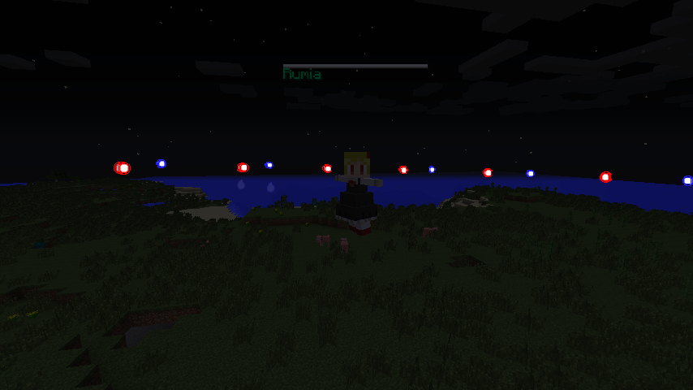
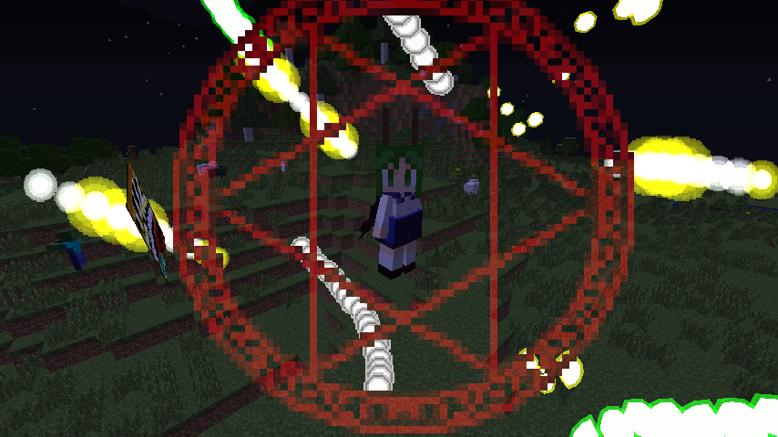
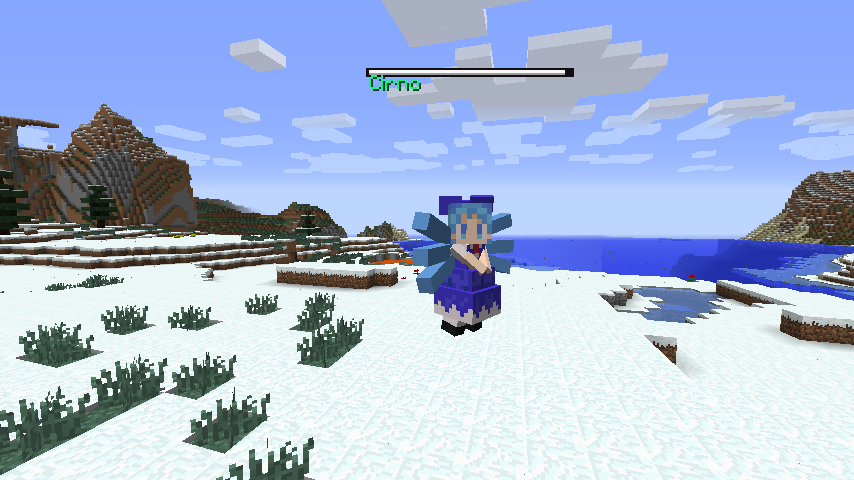
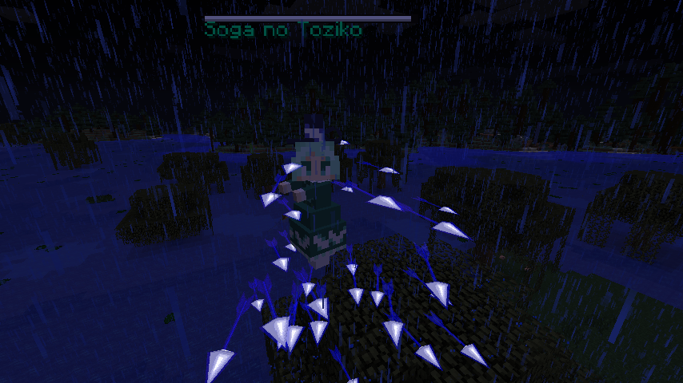

| 人間 | |
| 時間操作 | |
| 低 | |
| 中 | |
| ありとあらゆる場所 | |
| ？？？ | |
|
なぜか一人でぶらついてるメイド。主人は？ 弾幕ごっこはまだあまり乗る気じゃないみたいです。 | |
| 人間、神 | |
| 奇跡 | |
| 極低 | |
| 中 | |
| ありとあらゆる場所 | |
| ？？？ | |
|
信仰を集めるために守矢神社のお守りを売り歩いています。 弾幕ごっこはまだあまり乗る気じゃないみたいです。 | |
| 人間（妖怪とのハーフ） | |
| 道具の用途判定 | |
| 極低 | |
| 中 | |
| ありとあらゆる場所 | |
| なし | |
|
香霖堂の出張野外販売。 幻想郷からあらゆるアイテムを持ち込んでいます。 | |
 | |
| 妖怪 | |
| 闇 | |
| 低 | |
| 極高 | |
| 森、草原、覆われた森、タイガ | |
| 月符「ムーンライトレイ」 | |
|
暗闇を身にまとい、姿を確認できない。 この暗闇は、暗視効果も無効化し、近づくと完全に姿を見失う。 ボスの中ではかなり弱く、出現頻度も高い。 弾幕ごっこの練習には持ってこいといえる。 | |
 | |
| 妖怪（妖蟲） | |
| 蟲を操る | |
| 低 | |
| 高 | |
| 森、ジャングル、川 | |
| 蟲符「リトルバグストーム」 | |
|
蛍の妖怪。 蟲を操るとはいうが、特にそれっぽいことはしない。リグルキックもしない。 怖くないじゃん！ | |
 | |
| 妖精 | |
| 凍結 | |
| 中 | |
| 中 | |
| 凍ったタイガ、凍った川、雪山、雪原 | |
| 凍符「パーフェクトフリーズ」 | |
|
地域限定の強力な妖精。 妖精と思ってかかると必ず痛い目にあう。 ちなみに頂上だけ雪が積もっているような山での目撃情報はない。 | |
 | |
| 亡霊 | |
| 雷 | |
| 中 | |
| 中 | |
| 森、草原、沼地 | |
| 雷矢「ガゴウジサイクロン」 | |
|
雷雨の夜によく目撃情報がある。 亡霊であるため、幽霊と違い朝になっても消えることはない | |